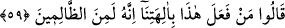

yapmıştır” diyerek onlara karşı delil ileri sürmek ve onları ayıplamaktı. Nitekim el-
İrşâd’da ve diğer tefsirlerde böyle denilmektedir.
Rivâyet olunur ki Âzer, bayram günlerinde İbrâhim (a.s.)’ı alıp götürdü. Önce
puthâneye vardılar. Oraya girip ilahlarına secde ettiler. Beraberlerinde getirdikleri
yemek ve ekmekleri de putların arasına bıraktılar. “Şimdi, ilahların bereketi
yemeklerimize sinecek.” dediler ve gittiler. Hz. İbrahim ise orada kaldı. Putlara baktı ve
küçümseyen bir tavırla şöyle dedi: “Size ne oldu da konuşmuyorsunuz, ne oldu da bu
yemekleri yemiyorsunuz?” Sonra orada asılı duran bir balta gördü. Onu aldı ve
içlerinde büyük olanı hariç, hepsini kırdı. Baltayı onun boynuna astı. Orada bırakılan
yemekleri de döktükten sonra evine döndü.”
İmam (Râzî) şöyle demiştir: “Eğer ‘İbrahim (a.s.)’ın kavmi aklı başında insanlar
idiyse putların kendilerine söylenen hiçbir şeyi işitmediklerini ve onların hiç kimseye
ne zararı, ne de faydasının dokunmayacağını mutlaka bilirlerdi. Bu durumda onları
kırmaya ne hâcet vardı? Bu konuda söylenecek son söz şudur: Onlar tıpkı bizim mushafa
ve mihraba saygı göstermemiz gibi putlara hürmet gösteriyorlardı. Hâl böyle olunca
putları kırması onların değerini düşürmez. Yok eğer bu kavim akıllı kimseler değil
idiyseler onlarla münâzara etmek ve onlara peygamber göndermek yerinde olmazdı.”
denirse, bunun cevabı şöyledir: “Onlar aklı olan insanlardı. Putların zararı da faydası
da olmadığını biliyorlardı. Ancak onlar, bu putların yıldızların heykelleri olduğuna,
kendilerine tapınanlara faydaları dokunan tılsımları bulunduğuna ve onları hafife
alanlara mutlaka bir zarar dokunacağına inanıyorlardı. Hz. İbrahim ise onların putlarını
kırdı, fakat ona hiçbir zarar dokunmadı. İşte bu onların inançlarının yanlış olduğuna
delâlet etmiştir.”
Âyette işâret vardır ki insan kendi nefsine ve tabîatına bırakılırsa, Hz. İbrahim’in
babası Âzer’in putlar yontup yaptığı gibi nefsin hevâsından putlar yapar. Ama kendisine
ezelî inâyet ulaşır ve ilâhî yardımlarla desteklenirse, hevâ putlarını kırar. Put yapmak
bir yana putları paramparça eder. Tıpkı İbrâhim (a.s.)’ın, babasının yonttuğu putları
kırdığı gibi. Eğer bir kimse ilâhî yardımdan mahrum bırakılanlardan ise tıpkı
Nemrud’un kavmi gibi hakkı bâtıl, bâtılı da hak görür.
Hucendî der ki:
Gurur putunu kır, çünkü âşıklar yolunda
Kırılan bir put, yüzlerce ibadetten yeğdir
59. “Bunu ilahlarımıza kim yaptı? Muhakkak o, zalimlerden biridir.” dediler.
Bayram yerinden dönüp de olup biteni gördükleri vakit: “Bunu ilahlarımıza kim